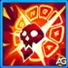
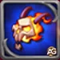
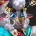

Guía de Fluffy – Hero Wars: Dominion Era
- Por: Alexandre Domingos. .
¿Escuchaste ese balido suave en medio de la batalla? Fluffy parece solo una oveja inocente, pero esconde algo mucho más siniestro bajo la lana: un Archdemon atrapado en un cuerpo adorable.
Fluffy fue una vez un cordero común, hasta que un ritual oscuro salió mal y el demonio Baalthazar quedó vinculado a su cuerpo. Incapaz de tomar el control total, Baalthazar se ve obligado a coexistir con Fluffy: mientras la oveja crea lazos extraños con los Guardianes, el demonio solo ve un recipiente para su venganza. Por fuera, ternura; por dentro, ira ancestral.

¿Quién es Fluffy en Hero Wars: Dominion Era?
Fluffy es un enigma viviente: una criatura adorable a primera vista, pero ligada al poder de un antiguo Archdemon. En esta guía descubrirás su historia, su rol en batalla y cómo integrarla en tus equipos.
- Función principal: Maga
- Función secundaria: Soporte
- Atributo principal: Inteligencia
- Posición: Aún no definida oficialmente
Pros y Contras — Hero Wars: Dominion Era
✅ Pros
- Excelente contra equipos de ataques básicos: La definitiva otorga inmunidad a ataques básicos y refleja el daño, neutralizando a los atacantes físicos.
- Resurrección de equipo: Ida y Vuelta al Infierno revive aliados con bonificaciones, convirtiendo derrotas en oportunidades.
- Interrupción de definitivas: Usurpación puede cancelar las definitivas enemigas — ideal contra composiciones dependientes de ultimates.
- Buen escalado tardío: Marca de la Muerte y los artefactos aumentan el daño y la penetración en las fases avanzadas del juego.
- Sinergia con banderas/artefactos: Se beneficia mucho de Recuperación, Prontitud y artefactos defensivos para mitigar el daño propio.
❌ Contras
- Riesgo de daño propio: Algunas mecánicas (p. ej., Usurpación al activarse) infligen daño a Fluffy; requiere suficiente salud y sustain.
- Vulnerable a explosiones mágicas: El daño mágico intenso puede superar las curaciones y anular la protección de la definitiva.
- Dependencia de habilidades/CD: Usurpación tiene tiempo de reutilización y probabilidad de cancelar — no siempre fiable.
- El posicionamiento es crítico: Necesita colocación adecuada para aprovechar Prontitud y las ventanas de resurrección.
- Contadores: Silencios, disipaciones y reducción de nivel de habilidad debilitan considerablemente a Fluffy.
Guía de habilidades de Fluffy – Hero Wars: Dominion Era
Fluffy no es una support cualquiera. Su kit combina protección demoníaca, resurrección en masa y un fuerte contraataque a las jugadas clave del enemigo. Dominar cada habilidad te permitirá convertir la furia de Baalthazar en tu arma más poderosa.
Pacto con el Diablo (Deal with the Devil – Definitiva)
Llamas infernales envuelven a todos los héroes aliados durante 12 segundos. Mientras el efecto está activo, los aliados son inmunes al daño de ataques básicos enemigos y reflejan ese daño de vuelta a los atacantes. Cada segundo, las llamas infligen daño a los aliados según su salud máxima.
Es una habilidad de alto riesgo y alta recompensa: ofrece una protección enorme contra equipos centrados en ataques básicos, pero el daño constante a tus propios héroes puede ser peligroso si la curación no acompaña. Úsala en el momento correcto para maximizar el daño reflejado y mantener bajo control el autodano.
Prioridad de mejora: Muy alta – Es la habilidad insignia de Fluffy. La inmunidad y el reflejo contra ataques básicos pueden anular por completo a los carries físicos. Sube esta habilidad primero para aumentar la duración y hacer más manejable el autodano.
Información de animación de la habilidad
- Fórmula: (80% ataque mágico + 200 * nivel) — daño reflejado máximo: 117.961.
- Duración: 12 segundos
- Daño de las llamas: 1% de la Salud máxima por segundo
Ida y Vuelta al Infierno (To Hell and Back)
Baalthazar protege a su rebaño de la muerte durante 10 segundos. Todos los aliados que mueran en ese periodo serán resucitados cuando termine el efecto. Recuperan parte de su salud y obtienen un aumento de ataque físico y mágico hasta el final de la batalla.
En la práctica, es una especie de "segunda ronda" para todo tu equipo. El momento de activación es crítico: úsala antes de una gran explosión de daño o de la rotación de definitivas enemigas. Aliados que regresan más fuertes pueden darle la vuelta a combates que parecían perdidos.
Prioridad de mejora: Alta – El efecto de resurrección cambia por completo el ritmo de las peleas largas. Al mejorarla, se incrementan la salud restaurada y el bono de ataque de los aliados resucitados. Priorízala justo después de la definitiva.
Información de animación de la habilidad
- Fórmula – Curación: (200% ataque mágico + 400 * nivel) = 281.902
- Fórmula – Aumento de ataque: (20% ataque mágico + 50 * nivel) = 29.490
- Duración: 10 segundos
- Recarga inicial: 10 segundos
- Recarga: 40 segundos

Marca de la Muerte (Mark of Death)
Fluffy acumula Marcas de la Muerte sobre sí misma, aumentando su penetración de armadura mágica. Cuando Fluffy muere, las Marcas explotan e infligen daño a los héroes enemigos por cada Marca activa. Se pueden acumular hasta 10 Marcas.
Esta habilidad pasiva convierte la muerte de Fluffy en una amenaza real. Cuantas más Marcas haya acumulado, más poderosa será la explosión final. Combina bien con composiciones agresivas en las que aceptas el riesgo de perder a Fluffy a cambio de un gran retorno de daño. La penetración mágica adicional también potencia el resto de su kit.
Prioridad de mejora: Media – Buena para aumentar el daño mágico y castigar al enemigo cuando Fluffy cae, pero menos impactante que sus habilidades de protección y resurrección. Déjala para después de las principales.
Información de animación de la habilidad
- Fórmula – Daño por Marca: (65% ataque mágico + 200 * nivel) = 100.718
- Fórmula – Penetración mágica por Marca: (5% ataque mágico + 5 * nivel + 100) = 6.498
- Marcas (máx): 10
- Recarga: 10 segundos
Usurpación (Usurpation)
Cuando un enemigo usa una habilidad definitiva, Fluffy anula esa habilidad e inflige daño al objetivo. Al mismo tiempo, Fluffy recibe daño basado en su propia salud máxima. Esta habilidad puede activarse una vez cada 20 segundos, y la probabilidad de anulación depende del nivel del objetivo.
Es la habilidad más "anti-jugada" de su kit. Cancelar la definitiva correcta del enemigo en el momento clave puede decidir la partida. Sin embargo, el daño que recibe Fluffy y el largo tiempo de reutilización impiden que puedas depender de ella todo el tiempo. Brilla especialmente contra equipos que dependen de una o dos definitivas clave.
Prioridad de mejora: Alta – Al mejorar esta habilidad, aumentas la probabilidad de cancelar definitivas enemigas y el daño infligido. Es fundamental contra composiciones centradas en burst. Mejórala junto o justo después de To Hell and Back.
Información de animación de la habilidad
- Fórmula – Daño al enemigo: (50% ataque mágico + 150 * nivel + 100) = 77.076
- Auto-daño: 20% de la Salud máxima de Fluffy (escala: (-0.15 * nivel + 39.5))
- Recarga: 20 segundos
- Recarga inicial: 1 segundo
- Observación: Probabilidad de anulación reducida contra objetivos por encima del nivel 130.
Fluffy – Prioridad de mejora de habilidades
Consulta el orden recomendado para subir las habilidades de Fluffy y aprovechar al máximo su kit:
- Pacto con el Diablo (Deal with the Devil – Definitiva) – Núcleo del kit, inmunidad y reflejo contra ataques básicos.
- Ida y Vuelta al Infierno (To Hell and Back) – Resurrección en área con bono de ataque; decisiva en peleas largas.
- Usurpación (Usurpation) – Cancela definitivas enemigas; clave contra composiciones de burst.
- Marca de la Muerte (Mark of Death) – Penetración mágica y explosión al morir; poderosa pero más situacional.
Prioridad de evolución de artefactos de Fluffy – Hero Wars: Dominion Era
Los artefactos de Fluffy potencian su arriesgado estilo de soporte demoníaco en Hero Wars: Dominion Era, aportando defensa mágica al equipo, vida extra y daño mágico escalable. A continuación se detalla qué artefacto subir primero y por qué.

Baalthazar's Skull (Artefacto de arma)
Bono de estadísticas: Defensa mágica +50.190
Cuando Fluffy lanza su definitiva Pacto con el Diablo (Deal with the Devil) (disparador Shieldbreaker), se activa Baalthazar's Skull y otorga durante 9 segundos estadísticas adicionales a todo el equipo. Este aumento de defensa mágica en área encaja perfectamente con su kit: los ataques básicos ya están neutralizados y el artefacto ayuda a tu equipo a sobrevivir al burst mágico enemigo mientras las llamas infernales siguen dañando a tus aliados.
Prioridad de evolución: Muy alta – Protege a todo el grupo justo cuando Fluffy es más vulnerable. Como el efecto es en área y se activa de forma fiable con la definitiva, es el artefacto más influyente tanto en PvP como en PvE.

Tome of Arcane Knowledge (Artefacto de libro)
Bono de estadísticas: Salud +83.649; Ataque mágico +16.731
Este libro es la principal fuente de supervivencia y daño personal de Fluffy. La vida adicional le ayuda a soportar tanto el daño de retroceso de Pacto con el Diablo como el burst enemigo, mientras que el ataque mágico extra potencia todas sus habilidades, desde las llamas infernales hasta las explosiones de Marca de la Muerte (Mark of Death).
Prioridad de evolución: Alta – Excelente mezcla de estadísticas ofensivas y defensivas para Fluffy. Aumenta mucho su fiabilidad en peleas largas, aunque es ligeramente menos valioso que Baalthazar's Skull, ya que no fortalece directamente a todo el equipo.

Ring of Intelligence (Artefacto de estadísticas)
Bono de estadísticas: Inteligencia +6.249
- Ataque mágico obtenido de Inteligencia: +18.747
- Defensa mágica obtenida de Inteligencia: +6.249
- Ataque físico obtenido de Inteligencia: +6.249
Como la Inteligencia es el atributo principal de Fluffy, este anillo escala todas sus cifras: más ataque mágico para sus habilidades y mejoras, defensa mágica adicional para su propia supervivencia y un pequeño aumento del ataque físico. Sin embargo, el beneficiario directo es casi siempre solo Fluffy, sin efectos de área ni utilidades extra.
Prioridad de evolución: Media-alta – Muy buen escalado a largo plazo, pero por nivel invertido se nota menos que el arma y el libro. Es recomendable mejorarlo después de tener bien subidos Baalthazar's Skull y el Tome of Arcane Knowledge y cuando la supervivencia básica de Fluffy ya esté asegurada.
Mejor skin para Fluffy
Las skins de Fluffy cambian efectos visuales y atributos; a continuación la prioridad recomendada de evolución por utilidad en batalla.
Skin Predeterminado
Ganancia de estadísticas: Inteligencia +1.365
- - ataque mágico desde Inteligencia: +4.095
- - defensa mágica desde Inteligencia: +1.365
- - ataque físico desde Inteligencia: +1.365
Cada punto de Inteligencia otorga: tres puntos de ataque mágico; un punto de defensa mágica; un punto extra de ataque físico si la Inteligencia es la stat principal.
Prioridad de Evolución: Media – Buena escalabilidad base para Fluffy, pero menos impactante que skins centrados en supervivencia contra Hellfire.
Total de piedras de skin de Inteligencia para nivel máximo:  30.825
30.825

Skin Bibliotecario
Ganancia de estadísticas: Armadura +10.650
Prioridad de Evolución: Muy alta – La gran armadura mejora mucho la supervivencia contra equipos físicos y reduce el riesgo del self‑damage del Hellfire; priorizar contra composiciones físicas.
Total de piedras de skin de Inteligencia para nivel máximo: 55.410
Prioridad de Evolución de Glifos de Fluffy
Orden recomendado de glifos para Fluffy según utilidad en combate y sinergia con su kit.

1º Glyfo – Ataque Mágico: +6.500
Ganancia: Ataque Mágico +6.500
Prioridad: Alta – Aumenta Hellfire, las explosiones de Mark of Death y la presión general; importante una vez asegurada la supervivencia.

2º Glyfo – Vida: +62.200
Ganancia: Vida +62.200
Prioridad: Muy alta – Crítico para sobrevivir al autodano de Hellfire y permitir que To Hell and Back reviva aliados de forma fiable; prioridad máxima en peleas sostenidas.

3º Glyfo – Armadura: +6.500
Ganancia: Armadura +6.500
Prioridad: Media‑alta – Ayuda contra equipos físicos y combina muy bien con la skin Bibliotecario; priorizar contra el meta físico.

4º Glyfo – Penetración Mágica: +6.500
Ganancia: Penetración Mágica +6.500
Prioridad: Alta – Aumenta Mark of Death y el daño mágico general; importante para maximizar el output ofensivo tras asegurar la durabilidad.

5º Glyfo – Inteligencia: +1.135
Ganancia: Inteligencia +1.135
- - ataque mágico desde Inteligencia: +3.405
- - defensa mágica desde Inteligencia: +1.135
- - ataque físico desde Inteligencia: +1.135
Prioridad: Media – Buen escalado a largo plazo pero menos inmediato que Vida o Ataque Mágico para el kit de Fluffy.
Mejor Patronaje para Fluffy
Mascotas recomendadas ordenadas por utilidad para Fluffy: prioriza supervivencia y habilidades que sinergicen con su kit mágico y el daño propio de Hellfire.
1º Lugar:

Khorus — Bonificación: Ataque mágico y armadura. Habilidad: Resilience Aura. Convierte parte del daño mágico infligido en un escudo para el maestro (límite aprox. 100000 fórmula), aumentando enormemente la supervivencia frente al recoil del Hellfire.
2º Lugar:

Axel — Bonificación: Ataque mágico y armadura. Habilidad: limita el daño de un golpe a una fracción de la vida máxima (aprox. 44.995% fórmula). Muy útil contra burst físico.
3º Lugar:

Merlín — Bonificación: Ataque mágico y penetración mágica. Habilidad que aumenta la velocidad de habilidades mágicas (~ 50.004% fórmula). Buena opción ofensiva tras asegurar supervivencia.
4º Lugar:

Biscuit — Bonificación: Ataque mágico y armadura. Habilidad que reduce la curación recibida por enemigos (~ 30.005% fórmula). Útil contra composiciones con mucha curación, pero menos prioritario que escudos/mitigación.
Fluffy – Mejores banderas de guerra en Hero Wars
Banderas de guerra recomendadas para aumentar la supervivencia de Fluffy y la reanimación del equipo. Prioridad en curación aumentada, generación temprana de energía y supresión de las habilidades enemigas.

Bandera de Recuperación
Aumenta todas las curaciones en un 10 % — ideal cuando Fluffy usa Pacto con el Diablo y las reanimaciones de equipo.
Beneficio para Fluffy y el equipo: Recuperación incrementa directamente la porción de curación de Ida y Vuelta al Infierno y ayuda a los aliados a resistir el daño propio y los picos de daño, haciendo las reanimaciones más seguras y fiables.

Bandera de Prontitud
Otorga energía al héroe trasero al inicio del combate y periódicamente — escala con patrones rojos.
Beneficio para Fluffy y el equipo: Si Fluffy está ubicada atrás, Prontitud le permite lanzar la definitiva y la reanimación mucho antes, asegurando ventanas defensivas y sorprendiendo al enemigo; excelente para control del tempo.

Bandera del Declive
Reduce las curaciones del equipo enemigo en un 10 %.
Beneficio para Fluffy y el equipo: Declive es un fuerte counter contra equipos basados en curación; evita que los enemigos mitiguen el daño de Fluffy y reduce la efectividad de las curaciones que anularían tus reanimaciones.

Bandera de Escarcha
Cada 18 segundos reduce los niveles de habilidad de los enemigos en 2 durante 8 segundos.
Beneficio para Fluffy y el equipo: Escarcha ayuda a debilitar a enemigos dependientes de habilidades (reduce ultimates y poder de habilidad) y hace más efectivas las contramedidas y reanimaciones de Fluffy al disminuir el daño entrante y el control enemigo.
Conclusión
Fluffy es un soporte/mago especializado que brilla contra equipos basados en ataques automáticos gracias a Deal with the Devil y puede cambiar el rumbo de las peleas con To Hell and Back. Prioriza la supervivencia (glifos de Vida/Armadura y skins defensivas), sube primero la ultimate y la resurrección, y usa artefactos como la Calavera de Baalthazar para proteger al equipo. Ten cuidado con los burst mágicos fuertes y el control de masas — el timing y la posición son clave. En resumen: excelente en peleas largas y metas físicas cuando está bien construido y jugado.

¡Explora nuevas habilidades con nuestras guías destacadas!


¡Deja tu opinión!
¿Te gustó nuestra guía de Fluffy? ¿Hay algo que no entendiste o quieres sugerir cambios? Te invitamos a unirte a la sección de comentarios en la página del blog de Alexandre Games. Siéntete libre de expresar tu opinión, aclarar dudas y compartir sugerencias.
Haz clic en el botón abajo para comenzar: